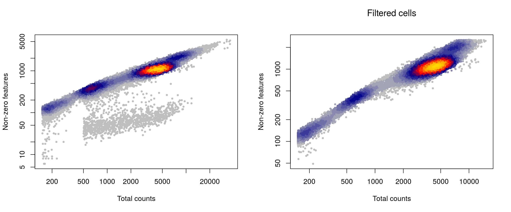
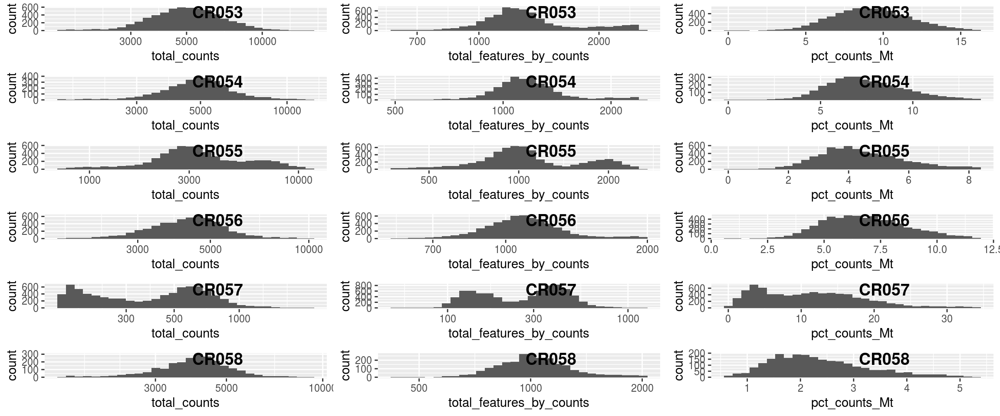

pbmc_pat_med
Almut Lütge
24 Februar 2020
Pbmc_pat_med
ScRNA seq data from Calini representing PBMCs from 2 individuals (male age 60,52) in different storing conditions: - fresh - fixed with MetOH - stored in 15% DMSO
suppressPackageStartupMessages({
library(plotly)
library(readr)
library(stringr)
library(edgeR)
library(pheatmap)
library(purrr)
library(scater)
library(dplyr)
library(reshape2)
library(ggplot2)
library(cowplot)
library(Matrix)
library(scran)
library(Seurat)
library(sctransform)
library(readxl)
library(DropletUtils)
library(LSD)
library(CellMixS)
library(tibble)
library(here)
library(scDblFinder)
})
seed <- 1000data
Load data Raw reads were mapped with Cellranger v3 against ensembl hg38
out_path <- here::here("out")
data_path <-"/home/Shared_s3it/_home_Shared_taupo_data_seq/calini_scrnaseq/FGCZ_human"
samples <- list.files(data_path, pattern="CR05", full.names = TRUE)
without <- c(paste0(data_path, "/CR052"),paste0(data_path, "/CR059"))
samples<-samples[!samples %in% without]
names(samples) <- basename(samples)
samples <- paste0(samples, "/outs/filtered_feature_bc_matrix")
samples <- samples[file.exists(paste0(samples, "/matrix.mtx.gz"))]
sce <- DropletUtils::read10xCounts(samples=samples)
# Add metadata
meta <- read_excel(paste0(data_path, "/20190312 NovaSeqRun Samples Characteristics.xlsx"))
sample_id <- gsub(".*human/","", sce$Sample)
sce$sample_id <- gsub("/outs.*","", sample_id)
sce$info <- meta$`Sample Name`[match(sce$sample_id, meta$`Sequencing ID`)]
##Add patient id
sce$patient <- ifelse(grepl("D301089", sce$Sample), "pat1", "pat2")
sce$media <- ifelse(grepl("Fresh", sce$Sample), "fresh", ifelse(grepl("DMSO", sce$Sample), "DMSO", "MetOH"))
colnames(sce) <- paste0(sce$sample_id, ".", sce$Barcode)
rownames(sce) <- paste0(rowData(sce)$ID, ".", rowData(sce)$Symbol)
sce$patient <- factor(sce$patient)
sce$media <- factor(sce$media)
table(sce$patient)##
## pat2
## 40717##
## MetOH
## 40717## [1] 33808 40717## [1] 40717 6## [1] 33808 3Calculate QC
#remove genes without any counts
keep_features <- rowSums(counts(sce) > 0) > 0
sce <- sce[keep_features, ]
dim(sce)## [1] 23886 40717## Mode FALSE TRUE
## logical 23873 13## Warning: 'calculateQCMetrics' is deprecated.
## Use 'perCellQCMetrics' or 'perFeatureQCMetrics' instead.Filtering
Find outlier
# # Plot filters
plotFilters <- function( sce, var="log10_total_counts", split_by="sample_id", nrow=NULL,
nmads=c(2,3,5), lt=c("dashed","dotted","dotdash"), xscale="free" ){
CD <- as.data.frame(colData(sce))
if(!(var %in% colnames(CD))) stop(paste("`var`",var,"is not in `colData(sce)`!"))
if(!is.null(split_by) && !(split_by %in% colnames(CD))){
stop(paste("`split_by`",split_by,"is not in `colData(sce)`!"))
}
library(ggplot2)
library(cowplot)
d <- CD[,var,drop=F]
if(!is.null(split_by)) d$dataset <- CD[[split_by]]
p <- ggplot(d, aes_string(x=var)) + geom_histogram(color="darkblue", bins=30)
if(xscale!="free"){
if(xscale!="fixed"){
if(xscale>1 && xscale%%1==0){
xq <- .tmads(d[[var]], xscale)
xr <- range(d[[var]],na.rm=T)
xq <- c(max(xq[1],xr[1]), min(xq[2],xr[2]))
}else{
if(xscale<=1 & xscale>0){
xscale <- (1-xscale)/2
xq <- quantile(d[[var]], probs=c(xscale,1-xscale), na.rm=T)
}else{
stop("Wrong `xscale` value!")
}
}
p <- p + xlim(xq[1], xq[2])
}
}
if(!is.null(split_by)){
if(is.null(nrow)) nrow <- ceiling(length(unique(d$dataset))/3)
p <- p + facet_wrap(~dataset, scales=ifelse(xscale=="free","free","free_y"), nrow=nrow)
for(ds in unique(d$dataset)){
for(i in 1:length(nmads)){
ma <- .tmads(d[which(d$dataset==ds),var], nmads[i])
df2 <- data.frame(xint=as.numeric(ma), dataset=rep(ds,2))
p <- p + geom_vline(data=df2, aes(xintercept=xint), linetype=lt[i])
}
}
}else{
for(i in 1:length(nmads)){
df2 <- data.frame(xint=as.numeric(.tmads(d[[var]], nmads[i])))
p <- p + geom_vline(data=df2, aes(xintercept=xint), linetype=lt[i])
}
}
p
}
.tmads <- function(x, nbmads=2.5){
x2 <- nbmads*median(abs(x-median(x)))
median(x)+c(-x2,x2)
}
plotFilters(sce)

## Warning: Removed 816 rows containing non-finite values (stat_bin).## Warning: Removed 12 rows containing missing values (geom_bar).## Warning: Removed 1 rows containing missing values (geom_vline).
## Warning: Removed 1 rows containing missing values (geom_vline).
## Warning: Removed 1 rows containing missing values (geom_vline).
## Warning: Removed 1 rows containing missing values (geom_vline).
## Warning: Removed 1 rows containing missing values (geom_vline).
## Warning: Removed 1 rows containing missing values (geom_vline).
## Warning: Removed 1 rows containing missing values (geom_vline).
## Warning: Removed 1 rows containing missing values (geom_vline).
## Warning: Removed 1 rows containing missing values (geom_vline).
# Find outlier
outlierPlot <- function(cd, feature, aph=NULL, logScale=FALSE, show.legend=TRUE){
if(is.null(aph)) aph <- paste0(feature, "_drop")
if(!(aph %in% colnames(cd))) aph <- NULL
p <- ggplot(as.data.frame(cd), aes_string(x = feature, alpha = aph)) +
geom_histogram(show.legend=show.legend)
if(!is.null(aph)) p <- p + scale_alpha_manual(values = c("TRUE" = 0.4, "FALSE" = 1))
if(logScale) p <- p + scale_x_log10()
p
}
plQCplot <- function(cd, show.legend=TRUE){
ps <- lapply(split(cd,cd$sample_id), sl=show.legend, FUN=function(x,sl){
list( outlierPlot( x, "total_counts", logScale=T, show.legend=sl),
outlierPlot( x, "total_features_by_counts", "total_features_drop",
logScale=T, show.legend=sl),
outlierPlot( x, "pct_counts_Mt", "mito_drop", show.legend=sl)
)
})
plot_grid( plotlist = do.call(c, ps),
labels=rep(basename(names(ps)), each=length(ps[[1]])),
ncol=length(ps[[1]]),
label_x=0.5 )
}
#Filtering
sce$total_counts_drop <- isOutlier(sce$total_counts, nmads = 2.5,
type = "both", log = TRUE, batch=sce$sample_id)
sce$total_features_drop <- isOutlier(sce$total_features_by_counts, nmads = 2.5,
type = "both", log = TRUE, batch=sce$sample_id)
sce$mito_drop <- sce$pct_counts_Mt > 5 &
isOutlier(sce$pct_counts_Mt, nmads = 2.5, type = "higher", batch=sce$sample_id)
sce$isOutlier <- sce$total_counts_drop | sce$total_features_drop | sce$mito_drop
# quality plot
plQCplot(colData(sce), show.legend=FALSE)## `stat_bin()` using `bins = 30`. Pick better value with `binwidth`.
## `stat_bin()` using `bins = 30`. Pick better value with `binwidth`.
## `stat_bin()` using `bins = 30`. Pick better value with `binwidth`.
## `stat_bin()` using `bins = 30`. Pick better value with `binwidth`.
## `stat_bin()` using `bins = 30`. Pick better value with `binwidth`.
## `stat_bin()` using `bins = 30`. Pick better value with `binwidth`.
## `stat_bin()` using `bins = 30`. Pick better value with `binwidth`.
## `stat_bin()` using `bins = 30`. Pick better value with `binwidth`.
## `stat_bin()` using `bins = 30`. Pick better value with `binwidth`.
## `stat_bin()` using `bins = 30`. Pick better value with `binwidth`.
## `stat_bin()` using `bins = 30`. Pick better value with `binwidth`.
## `stat_bin()` using `bins = 30`. Pick better value with `binwidth`.
## `stat_bin()` using `bins = 30`. Pick better value with `binwidth`.
## `stat_bin()` using `bins = 30`. Pick better value with `binwidth`.
## `stat_bin()` using `bins = 30`. Pick better value with `binwidth`.
## `stat_bin()` using `bins = 30`. Pick better value with `binwidth`.
## `stat_bin()` using `bins = 30`. Pick better value with `binwidth`.
## `stat_bin()` using `bins = 30`. Pick better value with `binwidth`.


Check thresholds
# Check outlier
mets <- c("total_counts_drop","total_features_drop","mito_drop")
sapply(mets, FUN=function(x){ sapply(mets, y=x, function(x,y){ sum(sce[[x]] & sce[[y]]) }) })## total_counts_drop total_features_drop mito_drop
## total_counts_drop 4809 4100 904
## total_features_drop 4100 6137 813
## mito_drop 904 813 2705nbcells <- cbind(table(sce$sample_id),table(sce$sample_id[!sce$isOutlier]))
colnames(nbcells) <- c("cells total","cells after filtering")
nbcells## cells total cells after filtering
## CR053 8197 6169
## CR054 4778 3265
## CR055 7700 6264
## CR056 7958 5865
## CR057 8807 8170
## CR058 3277 2406layout(matrix(1:2,nrow=1))
LSD::heatscatter( sce$total_counts, sce$total_features_by_counts, xlab="Total counts", ylab="Non-zero features", main="",log="xy")
w <- which(!sce$isOutlier)
LSD::heatscatter( sce$total_counts[w], sce$total_features_by_counts[w], xlab="Total counts", ylab="Non-zero features", main="Filtered cells",log="xy")
# summary of cells kept
cct <- table(sce$isOutlier, sce$sample_id)
row.names(cct) <- c("Kept", "Filtered out")
cct##
## CR053 CR054 CR055 CR056 CR057 CR058
## Kept 6169 3265 6264 5865 8170 2406
## Filtered out 2028 1513 1436 2093 637 871# drop outlier cells
sce <- sce[,!sce$isOutlier]
# require count > 1 in at least 20 cells
sce <- sce[which(rowSums(counts(sce)>1)>=20),]
dim(sce)## [1] 8331 32139## `stat_bin()` using `bins = 30`. Pick better value with `binwidth`.
## `stat_bin()` using `bins = 30`. Pick better value with `binwidth`.
## `stat_bin()` using `bins = 30`. Pick better value with `binwidth`.
## `stat_bin()` using `bins = 30`. Pick better value with `binwidth`.
## `stat_bin()` using `bins = 30`. Pick better value with `binwidth`.
## `stat_bin()` using `bins = 30`. Pick better value with `binwidth`.
## `stat_bin()` using `bins = 30`. Pick better value with `binwidth`.
## `stat_bin()` using `bins = 30`. Pick better value with `binwidth`.
## `stat_bin()` using `bins = 30`. Pick better value with `binwidth`.
## `stat_bin()` using `bins = 30`. Pick better value with `binwidth`.
## `stat_bin()` using `bins = 30`. Pick better value with `binwidth`.
## `stat_bin()` using `bins = 30`. Pick better value with `binwidth`.
## `stat_bin()` using `bins = 30`. Pick better value with `binwidth`.
## `stat_bin()` using `bins = 30`. Pick better value with `binwidth`.
## `stat_bin()` using `bins = 30`. Pick better value with `binwidth`.
## `stat_bin()` using `bins = 30`. Pick better value with `binwidth`.
## `stat_bin()` using `bins = 30`. Pick better value with `binwidth`.
## `stat_bin()` using `bins = 30`. Pick better value with `binwidth`.
##
## CR053 CR054 CR055 CR056 CR057 CR058
## 6169 3265 6264 5865 8170 2406Remove doublets
sce <- scDblFinder(sce, samples="sample_id", BPPARAM=MulticoreParam(2))
table(sce$scDblFinder.class)##
## doublet singlet
## 1122 22847Normalization
## clusters
## 1 2 3 4 5 6 7 8 9 10 11 12 13 14 15 16
## 349 1018 584 1239 2994 2383 2743 1057 935 1906 1063 1229 1370 2119 377 483
## 17 18 19 20
## 240 538 118 102sce <- computeSumFactors(sce, min.mean=0.1, cluster=clusters) ##cluster information added
sce <- scater::normalize(sce)## Warning: 'normalizeSCE' is deprecated.
## Use 'logNormCounts' instead.
## See help("Deprecated")## Warning: 'centreSizeFactors' is deprecated.
## See help("Deprecated")Integration
# create SeuratObject
seurat <- as.Seurat(sce)
# normalize, find variable genes, and scale
sl <- lapply(unique(as.character(seurat@meta.data$sample_id)), FUN=function(x){
x <- subset(seurat, cells=which(seurat@meta.data$sample_id==x))
x <- ScaleData(x)
x <- FindVariableFeatures(x, verbose=F)
# use non-standardized variance
v <- x@assays$RNA@meta.features[["vst.variance"]]
VariableFeatures(x) <- row.names(x@assays$RNA@meta.features)[order(v, decreasing=TRUE)[1:500]]
x
})## Centering and scaling data matrix
## Centering and scaling data matrix
## Centering and scaling data matrix
## Centering and scaling data matrix
## Centering and scaling data matrix## Computing 2000 integration features## Scaling features for provided objects## Finding all pairwise anchors## Running CCA## Merging objects## Finding neighborhoods## Finding anchors## Found 11542 anchors## Filtering anchors## Retained 6496 anchors## Extracting within-dataset neighbors## Running CCA## Merging objects## Finding neighborhoods## Finding anchors## Found 15559 anchors## Filtering anchors## Retained 7787 anchors## Extracting within-dataset neighbors## Running CCA## Merging objects## Finding neighborhoods## Finding anchors## Found 11116 anchors## Filtering anchors## Retained 4376 anchors## Extracting within-dataset neighbors## Running CCA## Merging objects## Finding neighborhoods## Finding anchors## Found 15246 anchors## Filtering anchors## Retained 6506 anchors## Extracting within-dataset neighbors## Running CCA## Merging objects## Finding neighborhoods## Finding anchors## Found 12012 anchors## Filtering anchors## Retained 6087 anchors## Extracting within-dataset neighbors## Running CCA## Merging objects## Finding neighborhoods## Finding anchors## Found 14467 anchors## Filtering anchors## Retained 6010 anchors## Extracting within-dataset neighbors## Running CCA## Merging objects## Finding neighborhoods## Finding anchors## Found 9382 anchors## Filtering anchors## Retained 5220 anchors## Extracting within-dataset neighbors## Running CCA## Merging objects## Finding neighborhoods## Finding anchors## Found 8315 anchors## Filtering anchors## Retained 4949 anchors## Extracting within-dataset neighbors## Running CCA## Merging objects## Finding neighborhoods## Finding anchors## Found 9340 anchors## Filtering anchors## Retained 5449 anchors## Extracting within-dataset neighbors## Running CCA## Merging objects## Finding neighborhoods## Finding anchors## Found 9507 anchors## Filtering anchors## Retained 5822 anchors## Extracting within-dataset neighborsseurat <- IntegrateData(anchorset = anchors, dims = seq_len(30),
features.to.integrate = rownames(sce))## Merging dataset 5 into 4## Extracting anchors for merged samples## Finding integration vectors## Finding integration vector weights## Integrating data## Merging dataset 2 into 1## Extracting anchors for merged samples## Finding integration vectors## Finding integration vector weights## Integrating data## Merging dataset 3 into 1 2## Extracting anchors for merged samples## Finding integration vectors## Finding integration vector weights## Integrating data## Merging dataset 4 5 into 1 2 3## Extracting anchors for merged samples## Finding integration vectors## Finding integration vector weights## Integrating data## Warning: Adding a command log without an assay associated with itDimension reduction
seurat <- RunPCA(object = seurat, npcs = 30, verbose = FALSE)
seurat <- RunTSNE(object = seurat, perplexity = 30,reduction = "pca", dims = seq_len(20),
seed.use = seed, do.fast = TRUE, verbose = FALSE)
seurat <- RunUMAP(object = seurat, reduction = "pca", dims = seq_len(20),
seed.use = seed, verbose = FALSE, n.neighbors = 30, min.dist = 0.5)## Warning: The default method for RunUMAP has changed from calling Python UMAP via reticulate to the R-native UWOT using the cosine metric
## To use Python UMAP via reticulate, set umap.method to 'umap-learn' and metric to 'correlation'
## This message will be shown once per sessionClustering
seurat <- FindNeighbors(object = seurat, reduction = "pca", dims = seq_len(20), verbose = FALSE)
for (res in c(0.1, 0.2, 0.4, 0.8, 1, 1.2, 2))
seurat <- FindClusters(object = seurat, resolution = res, random.seed = seed, verbose = FALSE)
seurat <- SetIdent(seurat, value="integrated_snn_res.0.2")
seurat@meta.data$cluster <- seurat$integrated_snn_res.0.2Convert seurat to sce
sce <- as.SingleCellExperiment(seurat)
# Save data
saveRDS(sce, file = paste0(out_path, "/sce_pbmc_pat_med.rds"))## R version 3.6.1 (2019-07-05)
## Platform: x86_64-pc-linux-gnu (64-bit)
## Running under: Ubuntu 16.04.6 LTS
##
## Matrix products: default
## BLAS: /usr/local/R/R-3.6.1/lib/libRblas.so
## LAPACK: /home/mark/miniconda3/lib/libmkl_rt.so
##
## locale:
## [1] LC_CTYPE=en_US.UTF-8 LC_NUMERIC=C
## [3] LC_TIME=en_US.UTF-8 LC_COLLATE=en_US.UTF-8
## [5] LC_MONETARY=en_US.UTF-8 LC_MESSAGES=en_US.UTF-8
## [7] LC_PAPER=en_US.UTF-8 LC_NAME=C
## [9] LC_ADDRESS=C LC_TELEPHONE=C
## [11] LC_MEASUREMENT=en_US.UTF-8 LC_IDENTIFICATION=C
##
## attached base packages:
## [1] parallel stats4 stats graphics grDevices utils datasets
## [8] methods base
##
## other attached packages:
## [1] scDblFinder_1.1.5 here_0.1
## [3] tibble_2.1.3 CellMixS_1.2.3
## [5] kSamples_1.2-9 SuppDists_1.1-9.5
## [7] LSD_4.0-0 DropletUtils_1.6.1
## [9] readxl_1.3.1 sctransform_0.2.1
## [11] Seurat_3.1.3 scran_1.14.6
## [13] Matrix_1.2-17 cowplot_1.0.0
## [15] reshape2_1.4.3 dplyr_0.8.4
## [17] scater_1.14.6 SingleCellExperiment_1.8.0
## [19] SummarizedExperiment_1.16.1 DelayedArray_0.12.2
## [21] BiocParallel_1.20.1 matrixStats_0.55.0
## [23] Biobase_2.46.0 GenomicRanges_1.38.0
## [25] GenomeInfoDb_1.22.0 IRanges_2.20.2
## [27] S4Vectors_0.24.3 BiocGenerics_0.32.0
## [29] purrr_0.3.3 pheatmap_1.0.12
## [31] edgeR_3.28.0 limma_3.42.2
## [33] stringr_1.4.0 readr_1.3.1
## [35] plotly_4.9.2 ggplot2_3.2.1
##
## loaded via a namespace (and not attached):
## [1] backports_1.1.5 sn_1.5-5 plyr_1.8.5
## [4] igraph_1.2.4.2 lazyeval_0.2.2 splines_3.6.1
## [7] listenv_0.8.0 TH.data_1.0-10 digest_0.6.25
## [10] htmltools_0.4.0 viridis_0.5.1 gdata_2.18.0
## [13] magrittr_1.5 cluster_2.1.0 ROCR_1.0-7
## [16] globals_0.12.5 RcppParallel_4.4.4 R.utils_2.9.2
## [19] sandwich_2.5-1 colorspace_1.4-1 rappdirs_0.3.1
## [22] ggrepel_0.8.1 xfun_0.12 crayon_1.3.4
## [25] RCurl_1.98-1.1 jsonlite_1.6.1 survival_3.1-8
## [28] zoo_1.8-7 ape_5.3 glue_1.3.1
## [31] gtable_0.3.0 zlibbioc_1.32.0 XVector_0.26.0
## [34] listarrays_0.3.0 leiden_0.3.3 BiocSingular_1.2.2
## [37] Rhdf5lib_1.8.0 future.apply_1.4.0 HDF5Array_1.14.2
## [40] scales_1.1.0 mvtnorm_1.1-0 bibtex_0.4.2.2
## [43] Rcpp_1.0.3 metap_1.3 plotrix_3.7-7
## [46] viridisLite_0.3.0 reticulate_1.14 dqrng_0.2.1
## [49] rsvd_1.0.3 tsne_0.1-3 htmlwidgets_1.5.1
## [52] httr_1.4.1 gplots_3.0.3 RColorBrewer_1.1-2
## [55] TFisher_0.2.0 ica_1.0-2 farver_2.0.3
## [58] R.methodsS3_1.8.0 pkgconfig_2.0.3 uwot_0.1.5
## [61] locfit_1.5-9.1 labeling_0.3 tidyselect_1.0.0
## [64] rlang_0.4.4 cellranger_1.1.0 munsell_0.5.0
## [67] tools_3.6.1 ggridges_0.5.2 evaluate_0.14
## [70] yaml_2.2.1 npsurv_0.4-0 knitr_1.28
## [73] fitdistrplus_1.0-14 caTools_1.18.0 randomForest_4.6-14
## [76] RANN_2.6.1 pbapply_1.4-2 future_1.16.0
## [79] nlme_3.1-144 R.oo_1.23.0 compiler_3.6.1
## [82] beeswarm_0.2.3 png_0.1-7 lsei_1.2-0
## [85] statmod_1.4.34 stringi_1.4.6 RSpectra_0.16-0
## [88] lattice_0.20-38 multtest_2.42.0 vctrs_0.2.3
## [91] mutoss_0.1-12 pillar_1.4.3 lifecycle_0.1.0
## [94] Rdpack_0.11-1 lmtest_0.9-37 RcppAnnoy_0.0.14
## [97] BiocNeighbors_1.4.1 data.table_1.12.8 bitops_1.0-6
## [100] irlba_2.3.3 gbRd_0.4-11 R6_2.4.1
## [103] KernSmooth_2.23-16 gridExtra_2.3 vipor_0.4.5
## [106] codetools_0.2-16 MASS_7.3-51.4 gtools_3.8.1
## [109] assertthat_0.2.1 rhdf5_2.30.1 rprojroot_1.3-2
## [112] withr_2.1.2 mnormt_1.5-6 multcomp_1.4-12
## [115] GenomeInfoDbData_1.2.2 hms_0.5.3 grid_3.6.1
## [118] tidyr_1.0.2 rmarkdown_2.1 DelayedMatrixStats_1.8.0
## [121] Rtsne_0.15 numDeriv_2016.8-1.1 ggbeeswarm_0.6.0